pos <- replicate(1000,sum(runif(16,-1,1)))
plot(density(pos))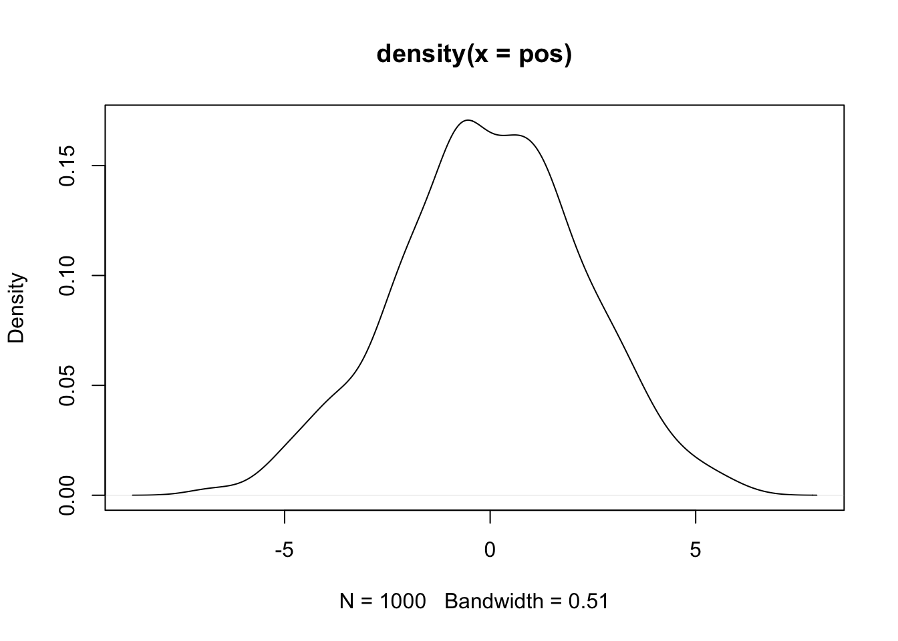
Why normal?
Ptolemy is often ridiculed for his geocentric model of the solar system, but he was mathematically brilliant. He computed an accurate model of the motions of the planets (epicycles - accurate from the earthly perspective, would just have to be re-calibrated every 100 years). Makes useful predictions given narrow domain of questioning. = Generalized system of approximation (Fourier series).
Linear regression is the geometric model of applied statistics. Linear regression: family of simple golems attempting to learn about the mean and variance of some measurement using an additive combinations of other measurements
Which uses a Gaussian (normal) distribution to describe our golem’s uncertainty about some measurement of interest.
Binomial distribution models the number of discrete successes (k) in a fixed number (n) of independent binary trials (Y/N, T/F). As the number of trials becomes large, the binomial distribution approaches the continuous Gaussian distribution, which is characterized by a bell-shaped curve defined by its mean and SD.
Random walks on a soccer field.
pos <- replicate(1000,sum(runif(16,-1,1)))
plot(density(pos))
INC number of steps INC stabilization on the Gaussian distribution. Any process that adds together random values from the same distribution converges to normal. Fluctuations from the mean cancel themselves out - most likely sum is sum in which every fluctuation is canceled by another (sum of zero)
Another way to get normal distribution.
prod(1+runif(12,0,0.1))[1] 2.120871growth <- replicate(1e4, prod(1 + runif(12,0,0.1)))
dens(growth, norm.comp=TRUE)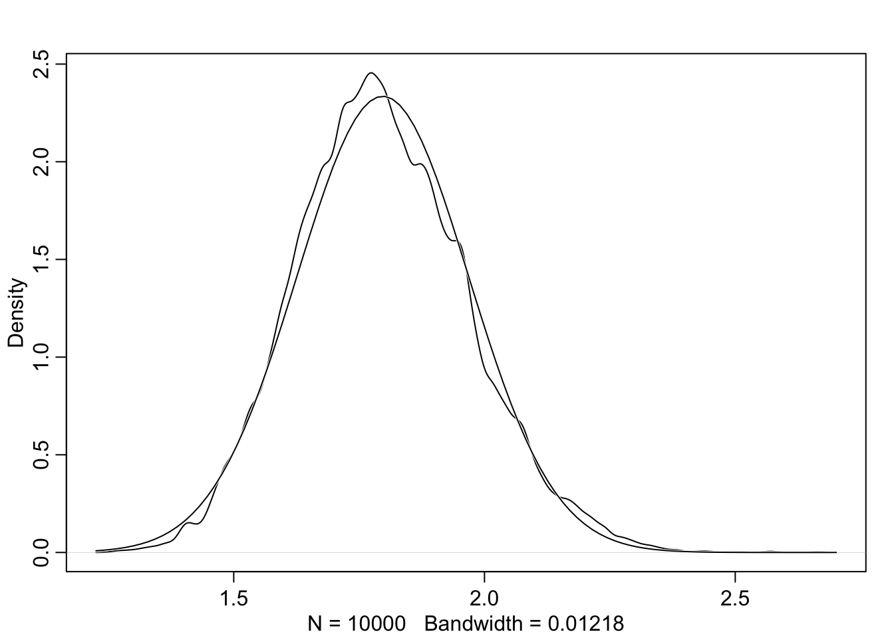
The effect at each locus was multiplied by the effects at all the others, NOT ADDED. Normal distribution because the effect at each locus is SMALL (multiplying small numbers is approx same as addition).
Small effects that multiply together are approximately additive, so they tend to stabilize on Gaussian distributions
big <- replicate(1e4, prod(1+runif(12,0,0.5)))
small <- replicate(1e4, prod(1 + runif(12,0,0.01)))
dens(big, norm.comp=TRUE)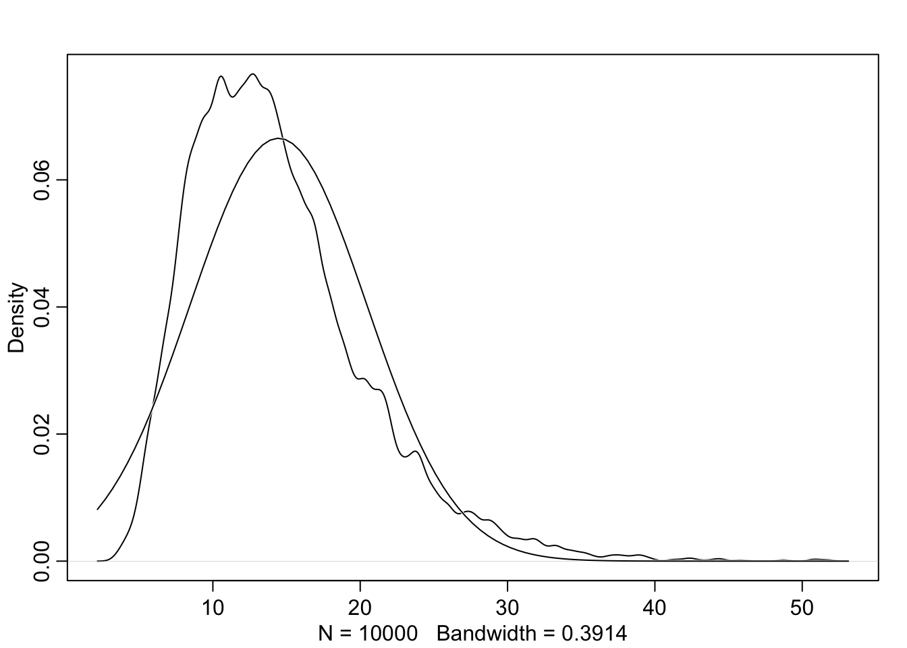
dens(small, norm.comp=TRUE)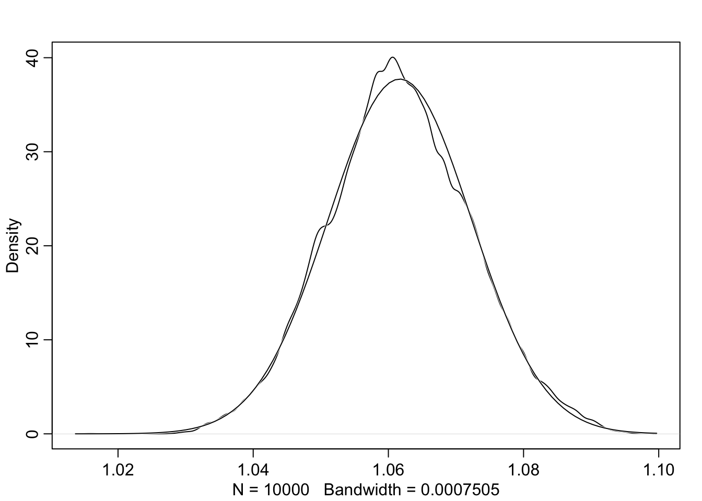
log.big <- replicate(1e4, log(prod(1+runif(12,0,0.5))))
dens(log.big, norm.comp=TRUE)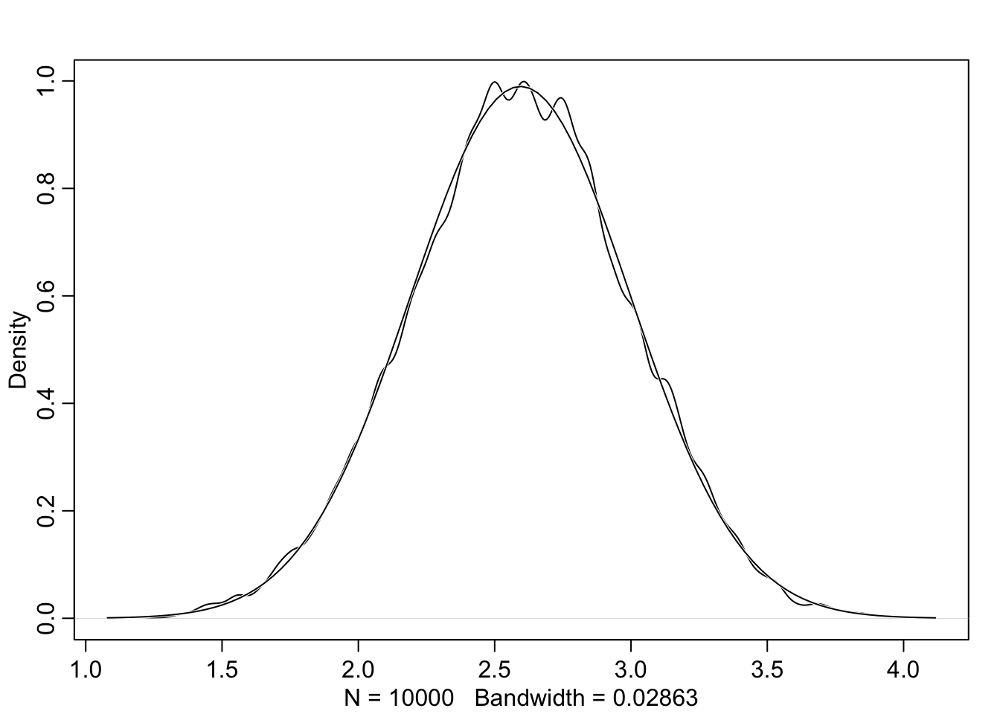
Adding logs is equivalent to multiplying the original numbers. Measurement scales are arbitrary, and it’s natural to measure sound, earthquakes, information on a log scale.
Ontological reason: World full of Gaussian distributions: measurement errors, variations in growth, velocities of molecules.
Processes that add together fluctuations.
Epistemological reason: Maximum entropy → minimal assumptions about the data (just that the measure has finite variance)
curve( exp( -x^2 ) , from=-3 , to=3 )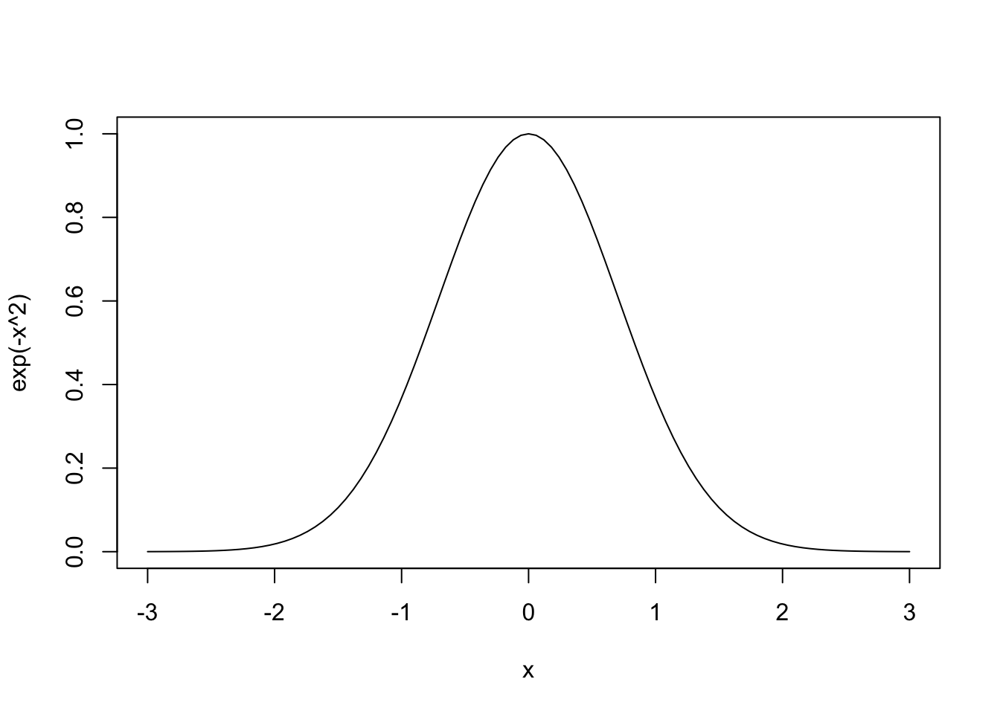
Gaussian is continuous - value \(y\) can be any continuous value. In contrast to binomial, which requires integers.
Probability mass functions: discrete outcomes (like binomial) → denoted \(Pr\)
Probability density functions: continuous outcomes → denoted \(P\) or \(f\) .
can be greater than 1
Probability density is the rate of change in cumulative probability
Area under the density function will never exceed 1 = probability mass
\(y_{i}\) ~ \(Normal(µ_{i}, σ)\)
\(µ{i} = 𝛽x{i}\)
\(𝛽\) ~ \(Normal(0,10)\)
\(σ\) ~ \(Exponential(1)\)
\(x_{i}\) ~ \(Normal(0,1)\)
Revising the globe-tossing model:
\[ W \sim {\sf Binom}(N, p) \]
\[ p \sim {\sf Uniform}(0,1) \]
Likelihood function used in Bayes’ thm: The count \(W\) is distributed binomially with sample size N and probability \(p\)
Define priors: The prior for \(p\) is assumed to be uniform between 0 and 1
Stochastic: indicated by ~ symbol. No single instance of the variable on left is known with certainty, but is instead characterized by a probabilistic mapping
w <- 6; n <- 9;
p_grid <- seq(0,1,length.out=100)
posterior <- dbinom(w,n,p_grid) * dunif(p_grid,0,1)
posterior <- posterior/sum(posterior)Loaded the data, not place them into convenient object
d <- Howell1d: special kind of list in R, table with named columns, correponding with variables, and numbered rows, corresponding to individual cases# str() compactly display the structure of an R object
str(d)'data.frame': 544 obs. of 4 variables:
$ height: num 152 140 137 157 145 ...
$ weight: num 47.8 36.5 31.9 53 41.3 ...
$ age : num 63 63 65 41 51 35 32 27 19 54 ...
$ male : int 1 0 0 1 0 1 0 1 0 1 ...# precis() helpful for summarizing posterior distr further on
precis(d) mean sd 5.5% 94.5% histogram
height 138.2635963 27.6024476 81.108550 165.73500 ▁▁▁▁▁▁▁▂▁▇▇▅▁
weight 35.6106176 14.7191782 9.360721 54.50289 ▁▂▃▂▂▂▂▅▇▇▃▂▁
age 29.3443934 20.7468882 1.000000 66.13500 ▇▅▅▃▅▂▂▁▁
male 0.4724265 0.4996986 0.000000 1.00000 ▇▁▁▁▁▁▁▁▁▇Working with columns
$ → extract the column named height from the data frame dd$heightd2 <- d[d$age >= 18,][row, column]dens(d2$height)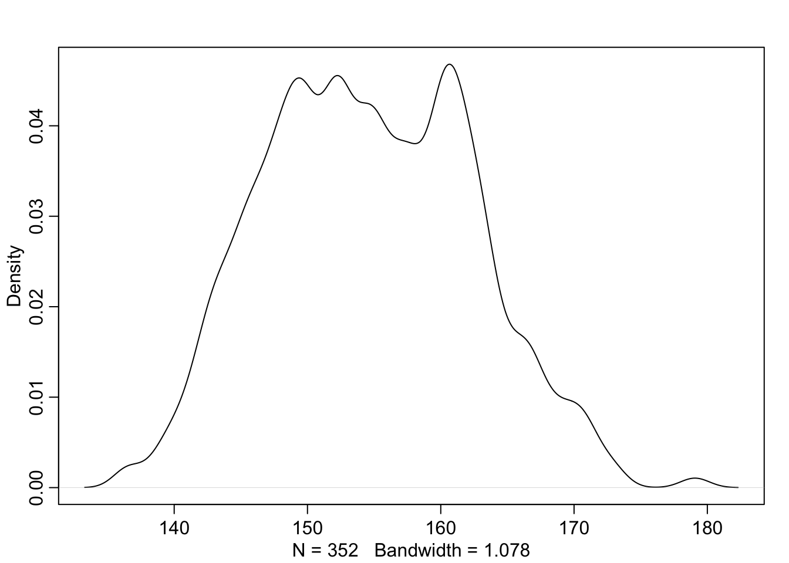
Write general model and compute plausibility of each µ and σ. To define the heights as normally distributed with a mean µ and sd σ:
\[ h_{i} \sim {Normal}(µ,σ) \]
h → list of heights
subscript i –> each individual element of list, takes on row numbers (1-32, no. heights in d2$height )
All the golem knows about each height measurement is defined by the name normal distribution with mean µ and standard dev σ. The model assumes that the values \(h_{i}\) are independent and identically distributed (IDD). In other words, each value of h has the same probability function, independent of the other h values and using the same parameters. But hardly true - heights within families are correlated.
The parameters to be estimated are µ and σ → so need prior \(Pr(µ, σ)\) or the joint prior probability for all parameters. Assume that they’re independent of each other or \(Pr(µ, σ) = Pr(µ)Pr(σ)\)
\[ h_{i} \sim {Normal}(µ,σ) \]
\[ µ \sim{Normal}(178, 20) \]
\[ σ \sim {Uniform}(0, 50) \]
The prior for µ is a broad Gaussian prior, centered on 178cm, with 95% of probability between 178 ±40.
Whatever the prior, it’s a very good idea to plot your priors, so you have a sense of the assumption they build into the model.
curve(dnorm(x,178,20), from=100, to=250, xlab = "mu",ylab="density")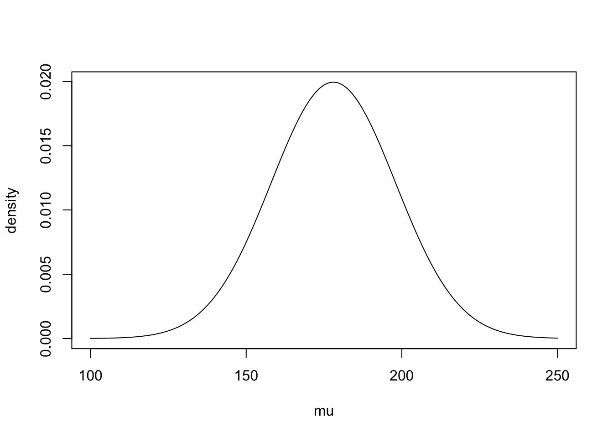
The σ prior is a truly flat prior, a uniform one, that functions just to constrain σ to have positive probability between zero and 50cm. View it with:
curve(dunif(x,0,50), from=-10, to=60)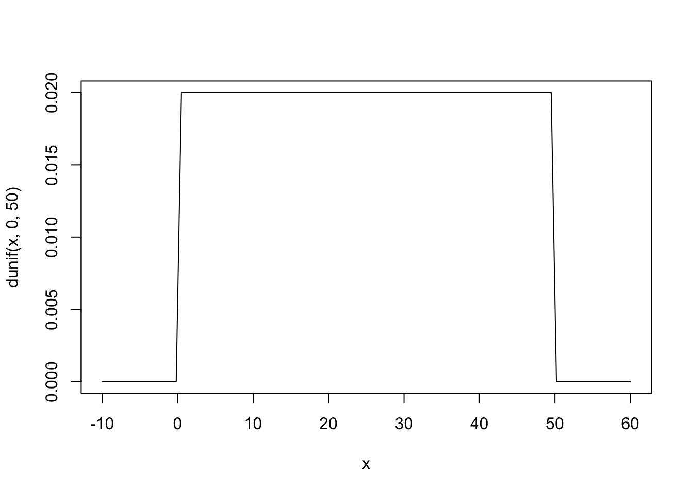
See what your priors imply about the distribution of heights
Helps diagnose bad choices
Simulate heights by sampling from the prior
sample_mu <- rnorm(1e4, 178,20)
sample_sigma <- runif(1e4,0,50)
prior_h <- rnorm(1e4, sample_mu, sample_sigma)
dens(prior_h, xlab="height")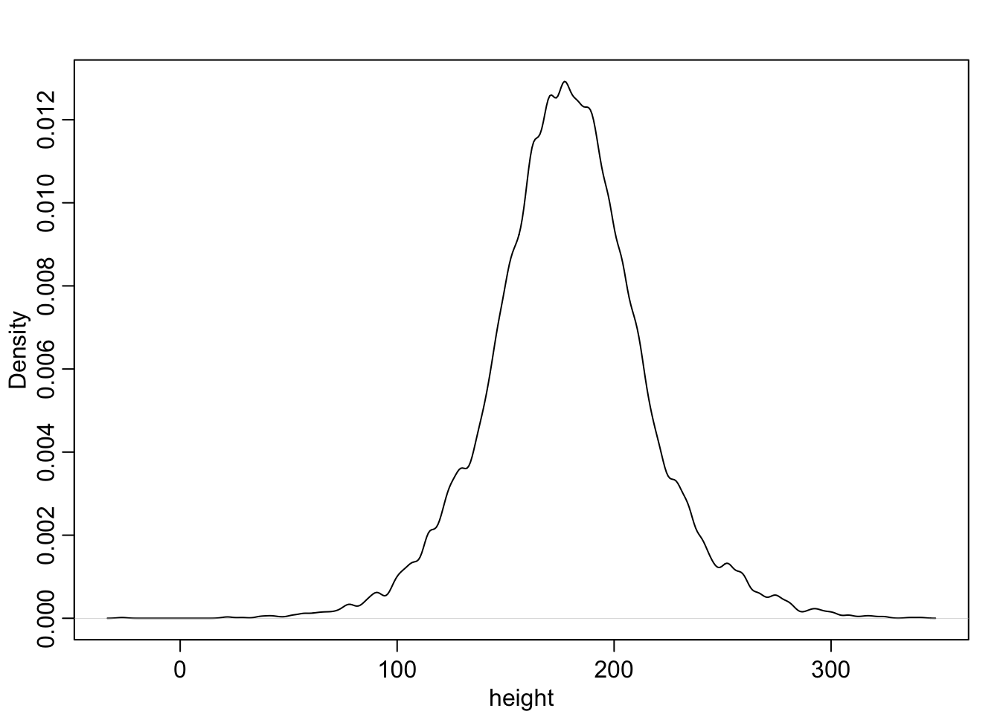
Expected distribution of heights, averaged over the prior
Prior prob distribution is not itself Gaussian - not an empirical expectation but a distribution of relative plausibilities of different heights, BEFORE seeing the data
Compare to a less informative prior for average height µ ~ Normal(178,100). Priors with large SDs are common in Bayesian models, but not really sensible.
sample_mu <- rnorm(1e4, 178,100)
prior_h <- rnorm(1e4, sample_mu, sample_sigma)
dens(prior_h)
abline(v=0, lty = "dashed") #plot line at x=0 to show where negative values occur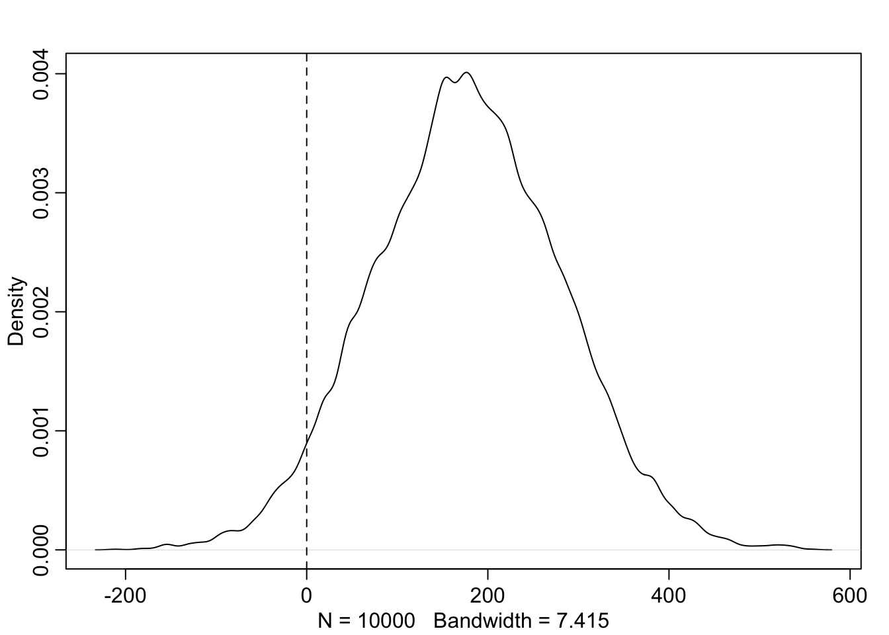
For the first time modeling Gaussian distribution, demonstrate calculations with brute force (usually impractical)
mu.list <- seq( from=150, to=160 , length.out=100 )
sigma.list <- seq( from=7 , to=9 , length.out=100 )
post <- expand.grid( mu=mu.list , sigma=sigma.list )
post$LL <- sapply( 1:nrow(post) , function(i) sum(
dnorm( d2$height , post$mu[i] , post$sigma[i] , log=TRUE ) ) )
post$prod <- post$LL + dnorm( post$mu , 178 , 20 , TRUE ) +
dunif( post$sigma , 0 , 50 , TRUE )
post$prob <- exp( post$prod - max(post$prod) )
contour_xyz(post$mu, post$sigma, post$prob)
image_xyz(post$mu, post$sigma, post$prob)
post$prob ) with functions like contour_xyz() or image_xyz() in the rethinking packageTo summarize and understand the posterior distribution, like in Ch3. New thing: since 2 parameters and need to sample combos of them, we first randomly samples row numbers in post in proportion to values in post$prob. Then pull out parameter values on those randomly sampled rows.
sample.rows <- sample(1:nrow(post), size=1e4, replace=TRUE, prob=post$prob)
sample.mu <- post$mu[sample.rows]
sample.sigma <- post$sigma[sample.rows]plot(sample.mu, sample.sigma, cex=0.5, pch=16, col=col.alpha(rangi2,0.1))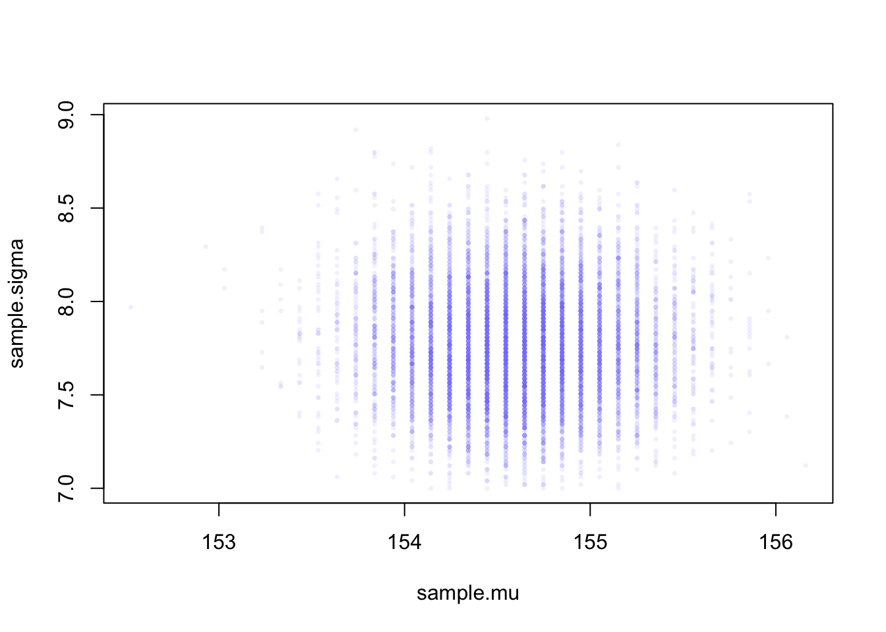
col.alpha() makes the colors transparent → demonstrates density (overlapping samples)
cex (character expansion, size of points) a numerical vector giving the amount by which plotting characters and symbols should be scaled relative to the default.
pch (plot character) a vector of plotting characters or symbols
Plot the densities of µ and σ → characterizing the shapes of the marginal posterior densities of µ and σ.
dens(sample.mu)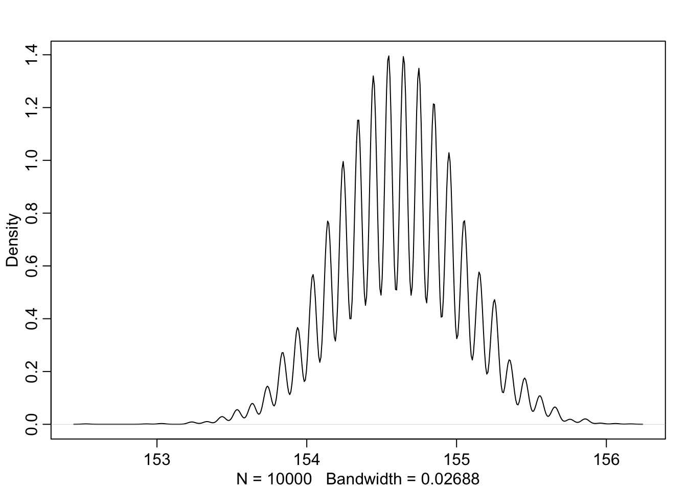
dens(sample.sigma)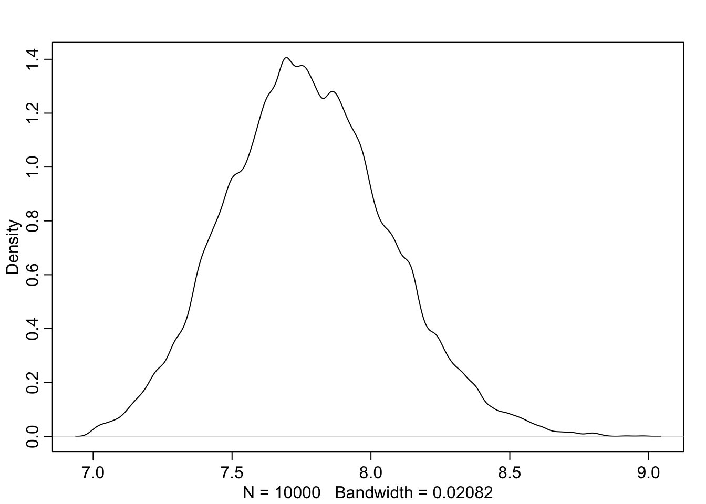
PI(sample.mu) 5% 94%
153.9394 155.2525 PI(sample.sigma) 5% 94%
7.323232 8.252525 Since these samples are just vectors of numbers, you can compute any statistic from them that you could from ordinary data.
Sample size and the normality of the standard dev’s posterior: Posterior is not always so Gaussian in shape. For a Gaussian likelihood and a Gaussian prior on µ, the posterior distribution is always Gaussian as well, regardless of sample size. It is the standard deviation σ that causes problems. So if you care about σ—often people do not—you do need to be careful of abusing the quadratic approximation.
Posterior of σ has long right-hand tail. Variances (SDs) must be positive (more uncertainty about how big it is rather than how small it is.
Sample with small size of 20 heights:
d3 <- sample(d2$height, size=20)
# repeat code from previous subsection
mu.list <- seq( from=150, to=170 , length.out=200 )
sigma.list <- seq( from=4 , to=20 , length.out=200 )
post2 <- expand.grid( mu=mu.list , sigma=sigma.list )
post2$LL <- sapply( 1:nrow(post2) , function(i)
sum( dnorm( d3 , mean=post2$mu[i] , sd=post2$sigma[i],log=TRUE ) ) )
post2$prod <- post2$LL + dnorm( post2$mu , 178 , 20 , TRUE ) +
dunif( post2$sigma , 0 , 50 , TRUE )
post2$prob <- exp( post2$prod - max(post2$prod) )
sample2.rows <- sample( 1:nrow(post2) , size=1e4 , replace=TRUE ,
prob=post2$prob )
sample2.mu <- post2$mu[ sample2.rows ]
sample2.sigma <- post2$sigma[ sample2.rows ]
plot( sample2.mu , sample2.sigma , cex=0.5 ,
col=col.alpha(rangi2,0.1) ,
xlab="mu" , ylab="sigma" , pch=16 )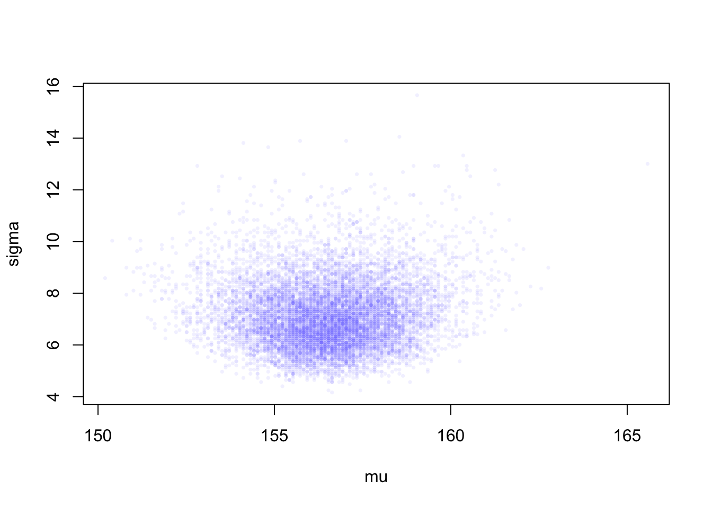
Inspect the marginal posterior density for σ, averaging over µ, produced with:
dens( sample2.sigma , norm.comp=TRUE )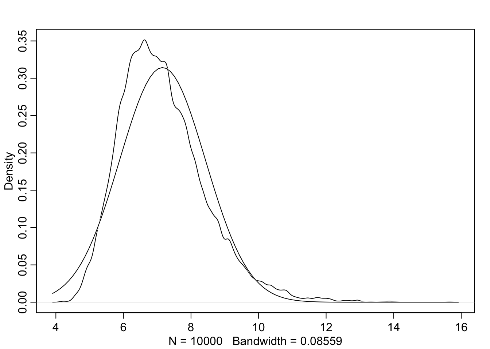
quapQuadratic approximation: quickly make inferences about the shape of the posterior. The posterior’s peak → maximum a posteriori estimate (MAP) = useful image of posterior’s shape at this peak
quap in rethinking - define the posterior probability at each combination of parameter values.
Then climbs the posterior distribution and find the peak, its MAP.
Estimates the quadratic curvature at the MAP to produce an approximation of the posterior distribution.
Remember: This procedure is very similar to what many non-Bayesian procedures do, just without any priors.
library(rethinking) # repeat code to load data and select out adults
data(Howell1)
d <- Howell1
d2 <- d[ d$age >= 18 , ]| Model definition | R code |
|---|---|
| \(h_{i} \sim {Normal}(µ,σ)\) | height ~ dnorm(mu, sigma) |
| \(µ \sim{Normal}(178, 20)\) | mu ~ dnorm(178,20) |
| \(σ \sim {Uniform}(0, 50)\) | sigma ~ dunif(0,50) |
flist <- alist(
height ~ dnorm(mu, sigma),
mu ~ dnorm(178, 20),
sigma ~ dunif(0,50)
)Fit model to the dataframe d2:
# fit model stored in m4.1
m4.1 <- quap(flist, data=d2)
#look at posterior distribution
precis(m4.1) mean sd 5.5% 94.5%
mu 154.607238 0.4119931 153.948793 155.265682
sigma 7.731304 0.2913833 7.265617 8.196991These numbers provide Gaussian approximations for each parameter’s marginal distribution. This means the plausibility of each value of µ, after averaging over the plausibilities of each value of σ, is given by a Gaussian distribution with mean 154.6 and standard deviation 0.4.
Start values for quap climbing a hill - needs to start at some combo of parameter values (usually random vals sampled from prior). Possible to specify starting val, like the mean and sd in this context.
start <- list(
mu=mean(d2$height),
sigma=sd(d2$height)
)
m4.2 <- quap(flist, data=d2, start=start)Difference between alist and list: both make collections of arbitrary R objects
list evaluates the code embedded inside - use when defining list of start values
alist does not execute code inside
Using a more informative prior (mean of 0.1 = narrow prior). µ won’t change much, but the estimate for σ does
m4.2 <- quap(
alist(
height ~ dnorm(mu, sigma),
mu ~ dnorm(178,0.1),
sigma ~ dunif(0,50)
), data = d2
)
precis(m4.2) mean sd 5.5% 94.5%
mu 177.86375 0.1002354 177.70356 178.02395
sigma 24.51756 0.9289233 23.03297 26.00216Sampling from quap.
A quadratic approx to a posterior distribution with more than one parameter (e.g., µ and σ) is just a multi-dimensional Gaussian distribution
quap calculates deviations for all parameters and also covariances among pairs of parameters
Variance-Covariance Matrix: shows how each parameter relates to every other parameter in the posterior distribution.
vcov(m4.1) mu sigma
mu 0.1697383448 0.0002227304
sigma 0.0002227304 0.0849042197A variance-covariance matrix can be factored into two elements: (1) a vector of variances for the parameters and (2) a correlation matrix that tells us how changes in any parameter lead to correlated changes in the others.
diag(vcov(m4.1)) # list of variances, if squared = the SDs in precis output mu sigma
0.16973834 0.08490422 cov2cor(vcov(m4.1)) # correlation matrix mu sigma
mu 1.000000000 0.001855346
sigma 0.001855346 1.000000000List of variances: if squared, we get the SDs in the precis output
Correlation matrix: correlations are close to 0, so learning µ tells us little about σ and vice versa
Sample vectors of values from a multi-dimensional Gaussian distribution. extract.samples() from the rethinking package.
extract.samples uses mvrnorm() which is like rnorm but simulates random vectors of multivariate Gaussian values.post <- extract.samples(m4.1, n=1e4)
head(post) mu sigma
1 154.6597 7.707231
2 154.7070 7.814399
3 154.4769 7.524457
4 154.9464 7.557132
5 154.0725 7.744343
6 154.0847 8.409307You end up with a data frame, post, with 10,000 (1e4) rows and two columns, one column for µ and one for σ. Each value is a sample from the posterior
precis(post) mean sd 5.5% 94.5% histogram
mu 154.606403 0.4117856 153.942190 155.268044 ▁▁▅▇▂▁▁
sigma 7.734802 0.2936643 7.263177 8.204982 ▁▁▁▁▁▂▅▇▇▃▁▁▁▁print("Vs m4.1 posterior")[1] "Vs m4.1 posterior"precis(m4.1) mean sd 5.5% 94.5%
mu 154.607238 0.4119931 153.948793 155.265682
sigma 7.731304 0.2913833 7.265617 8.196991#Compare o the grid approx
plot(post)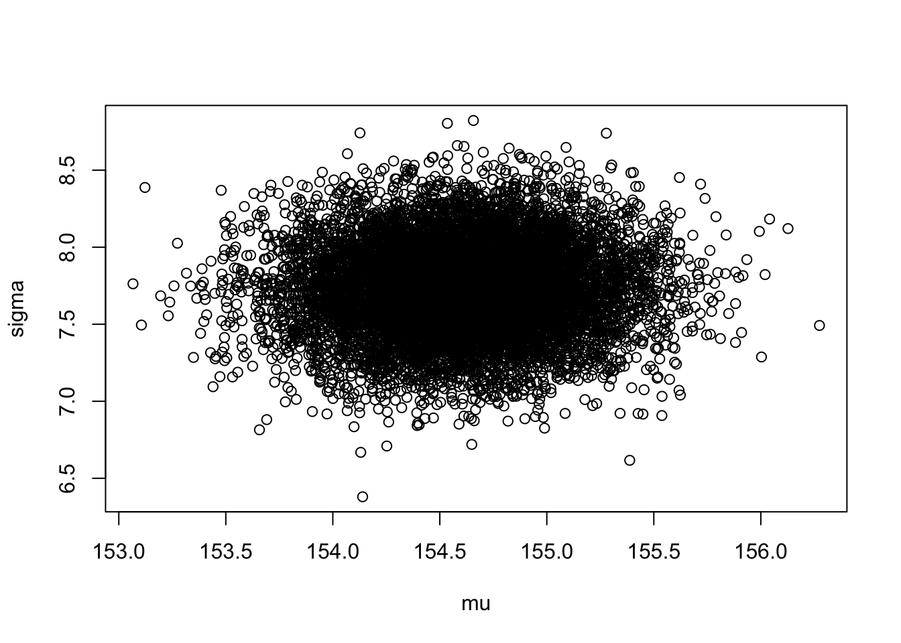
Predictor variable: independent variable we posit predicts the outcome if it has statistical association with the outcome variable.
How Kalahari height (outcome var) covaries with weight (predictor var). Seems dull now because readers don’t have a theory about growth and life history in mind.
Plot the height and weight against one another to get a sense of how they covary:
plot(d2$height, d2$weight)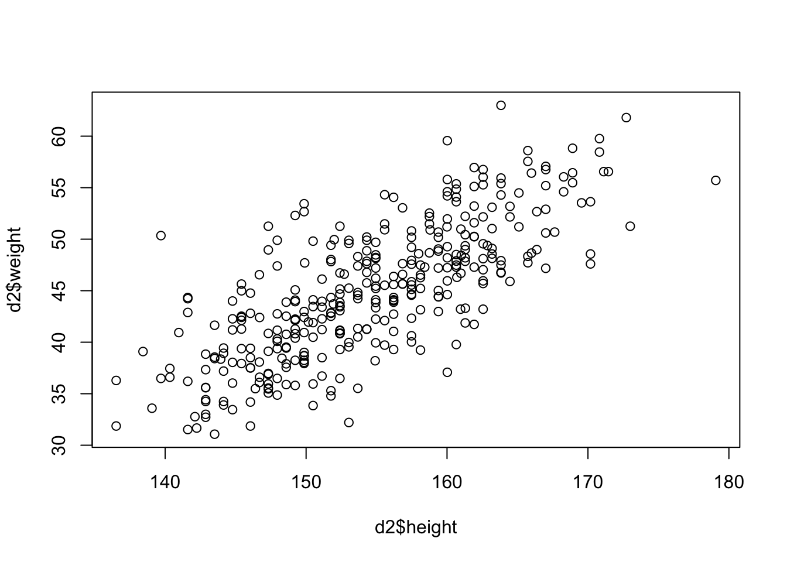
How to incorporate predictor vars into Gaussian model?
The linear model strategy. Make the parameter for the mean of a Gaussian distribution µ ito a linear function of the predictor variable and other new parameters we invent.
Case study: one predictor variable (weight). How to get weight into Gaussian model of height? Define µ as a function of values in x (d2$weight), with \(\overline{x}\) as the average of weights.
| \(h_{i} \sim {Normal}(µ_{i},σ)\) | likelihood | height ~ dnorm(mu,sigma) |
|---|---|---|
| \(µ_{i} = \alpha + \beta(x_{i} - \overline x)\) | linear model | mu ← a + b*weight |
| \(\alpha \sim{Normal}(178, 20)\) | \(\alpha\) prior | a ~ dnorm(178, 20) |
| \(\beta \sim{Normal}(0,10)\) | \(\beta\) prior | b ~ dlnorm(0,1) |
| \(σ \sim {Uniform}(0, 50)\) | \(\sigma\) prior | sigma ~ dunif(0,50) |
Probability of the observed height. The mean µ noe depends on unique values on each row i.
The mean µ is not longer a parameter to be estimated, instead \(µ_{i}\) is determined by other parameters \(\alpha\), \(\beta\), and the observed variable \(x\). We know \(µ_{i}\) with certainty (not stochastic). \(x_{i}\) is weight value on row \(i\).
Asks two questions:
Find the line that relates \(x\) to \(h\) - a line that passes through \(\alpha\) when \(x_{i} = \overline{x}\) and has slope \(\beta\)
These last priors define distributions for the unobserved variables.
\(\beta\) prior: why Gaussian prior with mean 0?
Simulate a hundred pairs of alpha and beta:
set.seed(2971)
N <- 100 #100 lines
a <- rnorm(N,178,20)
b <- rnorm(N,0,10)Now plot the lines:
plot(NULL,xlim=range(d2$weight), ylim=c(-100,400), xlab="weight", ylab="height")
abline(h=0, lty=2) # no one is negative height
abline(h=272, lty=1, lwd=0.5) # tallest person
mtext("b ~ dnorm(0,10")
xbar <- mean(d2$weight)
for (i in 1:N) curve(a[i] + b[i] *(x-xbar),from = min(d2$weight),to=max(d2$weight), add=TRUE, col=col.alpha("black", 0.2))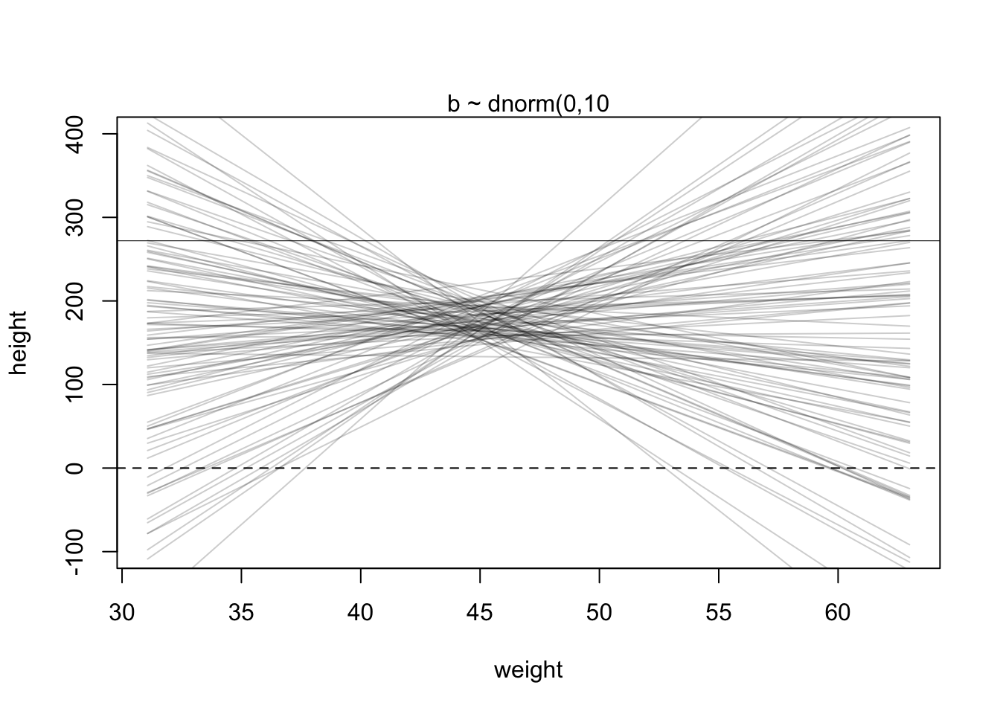
Relationship between weight and height can be absurdly positive or negative
Know that height INC with avg weight. Restrict to positive values → define prior as \(\beta \sim{Log-Normal}(0,1)\). Log of \(\beta\) has a Normal(0,1) distribution
dlnorm and rlnorm densities for working with log-normal distributions
b <- rlnorm(1e4, 0,1)
dens(b, xlim=c(0,5), adj=0.1)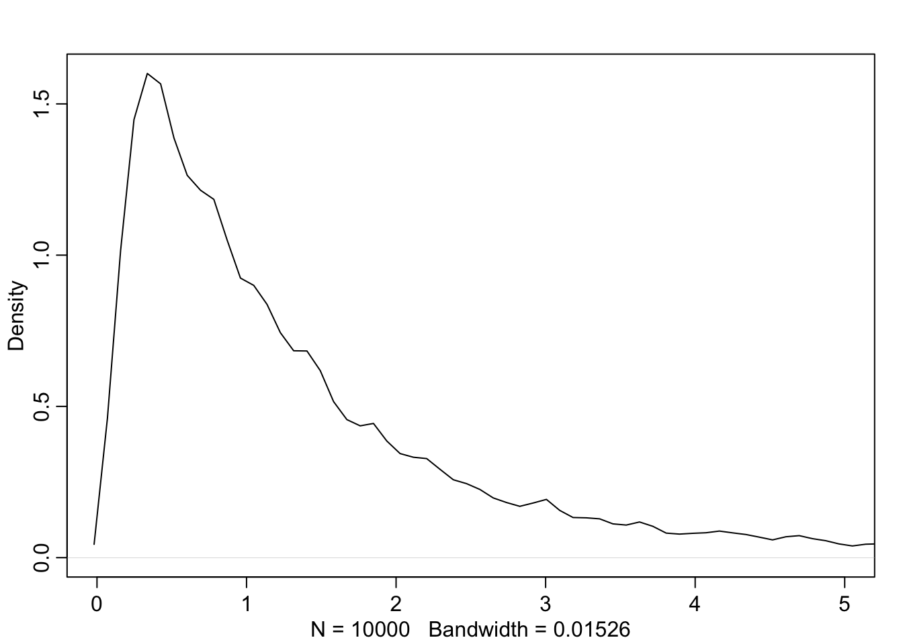
Re-doing the prior predictive simulation with Log-Normal
set.seed(2971)
N <- 100
a <- rnorm(N, 178,20)
b <- rlnorm(N,0,1)
# plotting
plot(NULL,xlim=range(d2$weight), ylim=c(-100,400), xlab="weight", ylab="height")
abline(h=0, lty=2) # no one is negative height
abline(h=272, lty=1, lwd=0.5) # tallest person
mtext("log(b) ~ dnorm(0,1)")
xbar <- mean(d2$weight)
for (i in 1:N) curve(a[i] + b[i] *(x-xbar),from = min(d2$weight),to=max(d2$weight), add=TRUE, col=col.alpha("black", 0.2))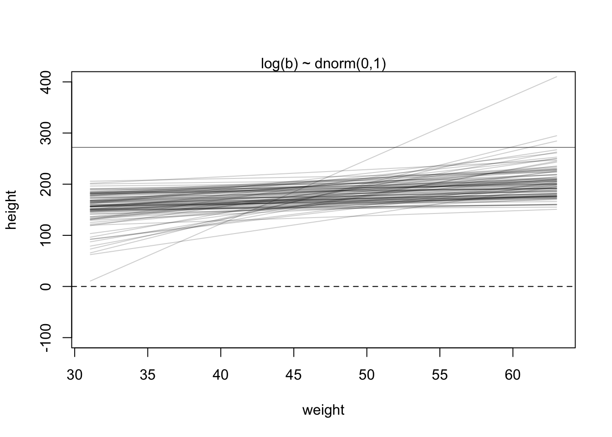
Important to fuss over priors (even if they end up being irrelevant due to big data). Because some priors may end up being relevant for many other analyses and it helps us build better models.
Priors encode states of info before seeing the data.
In cases with good prior info that discounts the plausibility of some parameter values (e.g., neg associations between height and weight) - encode directly in priors
Vary priors and repeat the analysis in order to study how different states of initial info influence inference
Often, many reasonable priors produce same inference
Conventional Bayesian priors are conservative relative to conventional non-Bayesian approaches
Choose priors conditional on pre-data knowledge of the data (constraints, ranges, theoretical relationships) never conditional on the observed sample
Just incorporate new model of the mean into the model specification inside quap and make sure to add a prior for the new parameter \(\beta\)
#load data again, since it's a long way back
library(rethinking)
data("Howell1")
d <- Howell1
d2 <- d[d$age >= 18,]
# define the average weight, x-bar
xbar <- mean(d2$weight)
#fit model
m4.3 <- quap(
alist(
height ~ dnorm(mu, sigma),
mu <- a + b*(weight - xbar),
a ~ dnorm(178,20),
b ~ dlnorm(0,1),
sigma ~ dunif(0,50)
),
data=d2)Tables of marginal distributions: inspect the marginal posterior distributions of the parameters
precis(m4.3) mean sd 5.5% 94.5%
a 154.6013671 0.27030766 154.1693633 155.0333710
b 0.9032807 0.04192363 0.8362787 0.9702828
sigma 5.0718809 0.19115478 4.7663786 5.3773831Focus on new parameter \(\beta\). Mean on 0.9 = a person 1kg heavier is expected to by 0.90 cm taller. 89% of the posterior probability lies between 0.84 and 0.97. \(\beta\) vals close to 0 or greatly above 1 are highly incompatible with these data and this model.
0.9 are plausible onesAlso need variance-covariance matrix to describe the quadratic posterior completely, along with precis()
round(vcov(m4.3), 3) a b sigma
a 0.073 0.000 0.000
b 0.000 0.002 0.000
sigma 0.000 0.000 0.037Very little covariation among the parameters.
pairs(m4.3) #shows both marginal posteriors and covariance Warning in par(usr): argument 1 does not name a graphical parameter
Warning in par(usr): argument 1 does not name a graphical parameter
Warning in par(usr): argument 1 does not name a graphical parameter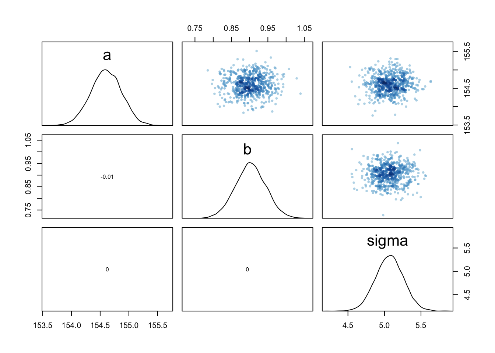
Plotting posterior inference against the data.
Plot raw data, compute posterior mean values for a and b, draws implied line.
plot(height ~ weight, data=d2, col=rangi2)
post <- extract.samples(m4.3)
a_map <- mean(post$a)
b_map <- mean(post$b)
curve(a_map + b_map * (x - xbar), add=TRUE)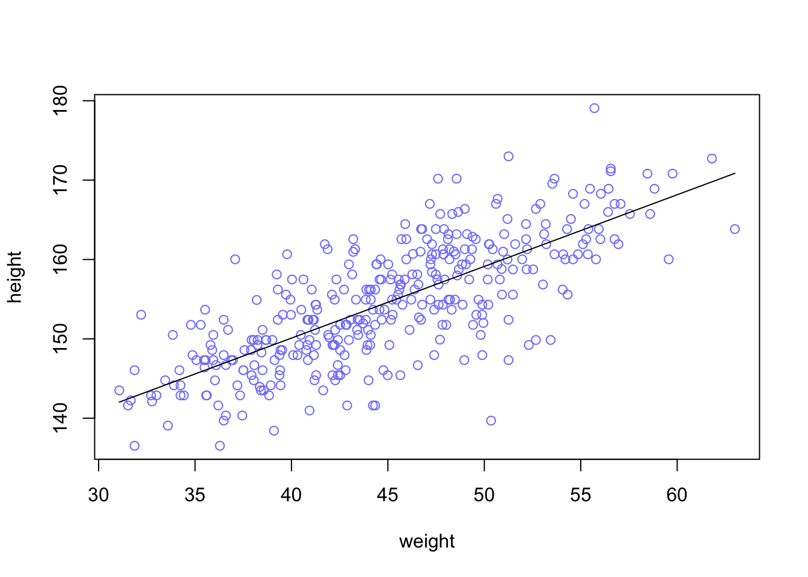
Each point in this plot is a single individual. The black line (posterior mean) is defined by the mean slope β and mean intercept α. This is not a bad line. But lots of other highly plausible lines near it.
Adding uncertainty around the mean.
Each combo of \(\alpha\) and \(\beta\) has posterior probability. How to get uncertainty into the plot: sample a bunch of lines from the posterior distribution, display lines on plot to visualize the uncertainty in the regression relationship
Work with all the samples from the model
post <- extract.samples(m4.3)
post[1:5,] a b sigma
1 154.5789 0.9376825 5.220756
2 154.4067 0.8937310 4.752735
3 154.4622 0.9150822 5.341227
4 154.2649 0.9236067 5.160423
5 155.1258 0.9495934 5.108891each row is a correlated random sample from the joint posterior of all three parameters, using the covariances provided by vcov(m4.3)
The average of very many of these lines = posterior mean line
Scatter around the average alters our confidence in the relationship between the predictor and outcome
Display bunch of the lines incrementally - see scatter
N <- 100
dN <- d2[1:N,]
mN <- quap(
alist(
height ~ dnorm(mu, sigma),
mu <- a + b*(weight - mean(weight)),
a ~ dnorm(178,20),
b ~ dlnorm(0,1),
sigma ~ dunif(0,50)
), data=dN
)
# Extract 20 samples from the posterior
post <- extract.samples(mN, n=20)
# Display raw data and sample size
plot(dN$weight, dN$height,
xlim=range(d2$weight), ylim=range(d2$height),
col=rangi2, xlab="weight", ylab="height")
mtext(concat("N = ", N))
# Plot the lines, with transparency
for (i in 1:20)
curve(post$a[i] + post$b[i]*(x - mean(dN$weight)),
col=col.alpha("black", 0.3), add=TRUE)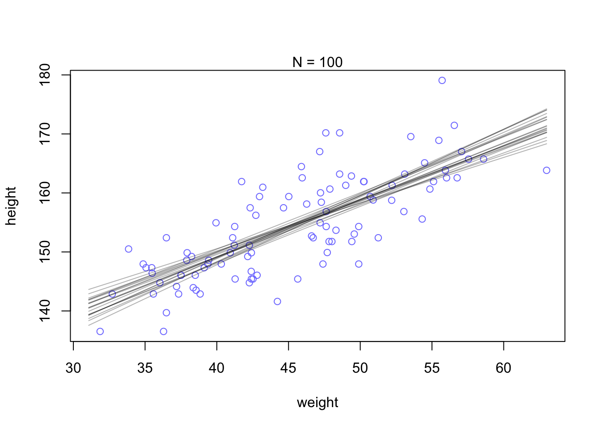
Plotting regression intervals and contours: More informative to see uncertainty by plotting an interval or contour around the average regression line.
Make list of 10,000 vals of µ for an individual who weights 50kg (\(x_{i}\)) via samples from posterior
\[ µ_{i} = \alpha + \beta(x_{i}-\overline{x}) \]
post <- extract.samples(m4.3)
mu_at_50 <- post$a + post$b * (50 - xbar)
# Plotting mu_at_50 = Vector of predicted means, one for each random sample from the posterior
dens(mu_at_50, col=rangi2, lwd=2, xlab="mu|weight=50")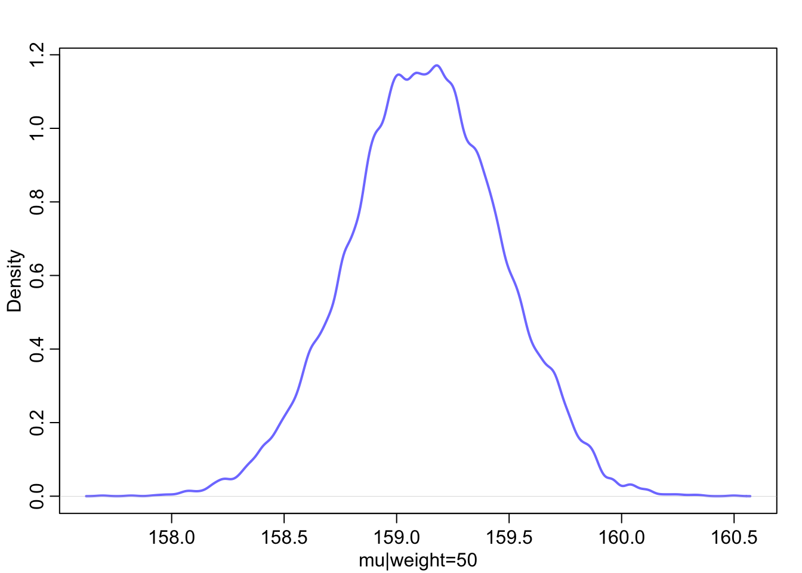
Since the components of µ have distributions, so too does µ. And since the distributions of α and β are Gaussian, so to is the distribution of µ (adding Gaussian distributions always produces a Gaussian distribution).
Since the posterior for µ is a distribution, you can find intervals for it, just like for any posterior distribution.
PI(mu_at_50, prob=0.89) 5% 94%
158.5785 159.6799 That’s good so far, but we need to repeat the above calculation for every weight value on the horizontal axis, not just when it is 50 kg. Use the link function from rethinking. It takes the quap approx, samples from the posterior distribution, and computes µ for each case in the data and sample from the post distribution.
mu <- link(m4.3)
str(mu) num [1:1000, 1:352] 158 157 157 157 157 ...Output: big matrix of µ values
Each row = sample from post distri (default = 1000 samples)
Each column = case in the data (352 columns in this matrix)
This is a distribution of µ for each individual in the original data
Now, let’s get a distribution of µ for each unique weight value on the horizationtal axis:
# Define sequence of wights to compute predictions for
# these values will be on the horiz axis
weight.seq <- seq(25, 70, by=1)
# Use link() to compute mu
# For each sample from posterior
# and for each weight in weight.seq
mu <- link(m4.3, data=data.frame(weight=weight.seq))
str(mu) num [1:1000, 1:46] 136 136 136 137 137 ...mu - fed it 46 diff values for weightVisualize by plotting the distribution of µ values at each height
# Use type="n" to hide raw data
plot(height ~ weight, d2, type="n")
# Loop over samples and plot each mu value
for (i in 1:100)
points(weight.seq, mu[i,], pch=16, col=col.alpha(rangi2,0.1))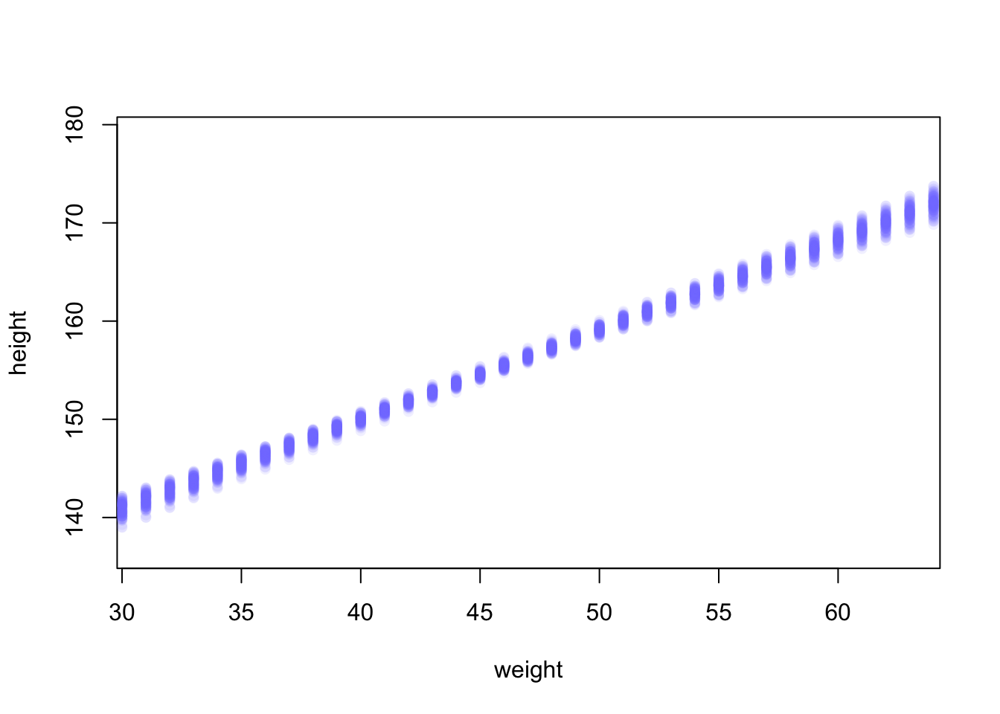
At each weight value in weight.seq, a pile of computed µ values are shown. Each of the piles is a Gaussian distribution
weightSummarize the distribution for each weight value, using apply()
# Summarize the distribution of mu
#Compute the mean of each column (dimension "2") of the matrix mu
mu.mean <- apply(mu, 2, mean) #contains the average mu at each weight value
#Compute the PI (89% interval) of each column of the matrix mu
mu.PI <- apply(mu, 2, PI, prob=0.89) #contains 89% lower and upper bounds for each weight value Plot these summaries on top of the data
#plot raw data
# fading out points to make line and interval more visible
plot(height ~ weight, data=d2, col=col.alpha(rangi2,0.5))
# Plot the MAP line, aka the mu for each weight
lines(weight.seq, mu.mean)
# Plot the shaded region for 89% PI
shade(mu.PI, weight.seq)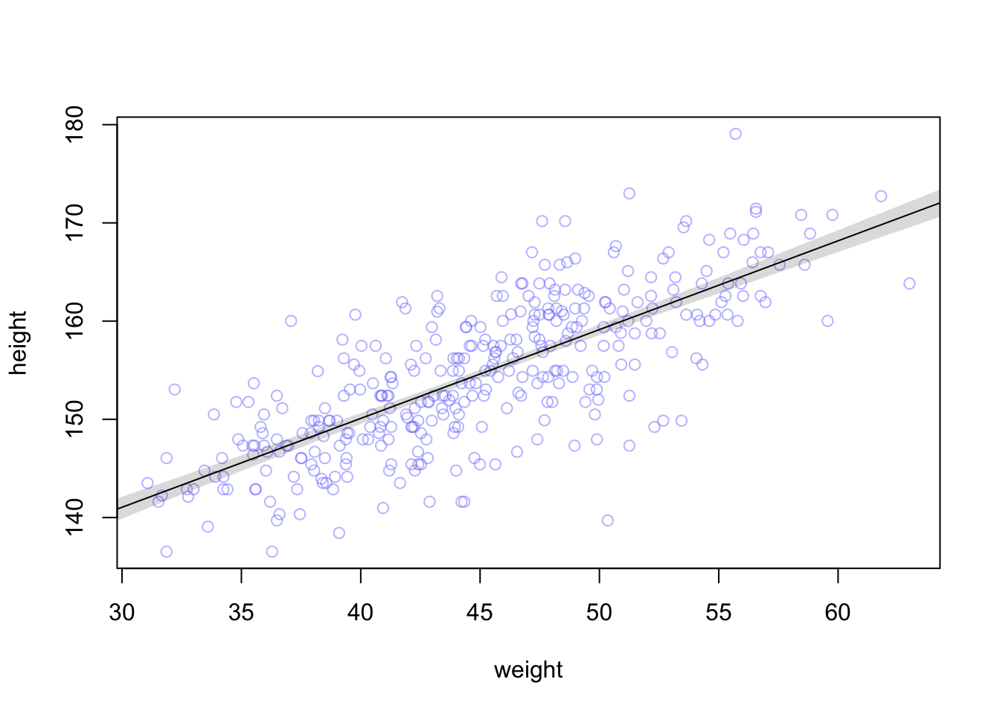
Using this approach, can derive and plot the posterior prediction means and intervals for quite complicated models, for any data you choose.
link to generate distributions of posterior values for µ. The default behavior of link is to use the original data, so you have to pass it a list of new horiz axis values you want to plot posterior predictions acrossmean or PI to find averages and lower and upper bounds of µ for each value of the predictor variablelines or shade to draw the lines and intervals. Or you might plot the distributions of the predictions, or do further numerical calculations with themRecipe words for every model we fit in the book. As long as you know how parameters relate to the data, you can use samples from the posterior to describe any aspect of the model’s behavior.